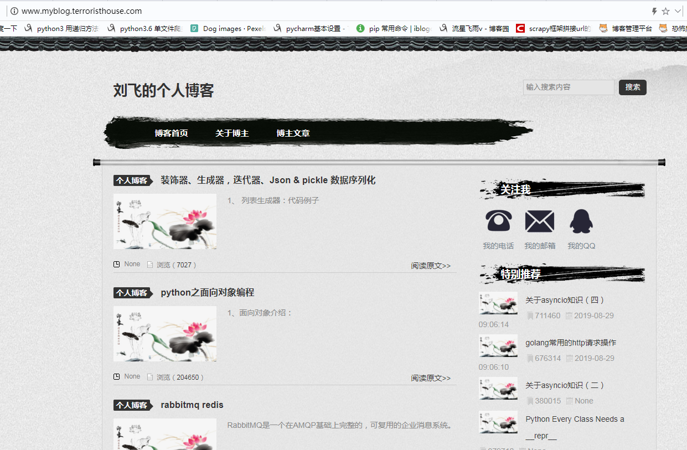

已安装的环境nginx，python3,mysql,uwsgi，virtualenv
1,创建虚拟环境
virtualenv -p python3 myblog2，进入虚拟环境
source myblog/bin/activate3，在虚拟环境中安装flask和uwsgi
pip install flask
pip install uwsgi4，配置uwsgi，在部署项目的根目录下创建配置文件uwsgiconfig.ini，添加配置内容如下
[uwsgi]
# uwsgi 启动时所使用的地址与端口（可以与项目端口不一致）
socket = 127.0.0.1:5000
# 指向网站目录
chdir=/usr/local/nginx/html/myblog
# python 启动程序文件
wsgi-file = myblog.py
# python 程序内用以启动的 application 变量名
callable = app
# 处理器数
processes = 4
# 线程数
threads = 2
# 缓冲区
buffer-size = 32768
#状态检测地址
stats = 127.0.0.1:91915，配置nginx，添加如下内容：
server {
listen 80;
server_name www.myblog.terroristhouse.com; # 阿里云公网ip
location / {
include uwsgi_params;
uwsgi_pass 127.0.0.1:5000;
uwsgi_param UWSGI_PYHOME /root/myblog; #python位置,要么是虚拟机，要么是运行的环境变量位置
uwsgi_param UWSGI_CHDIR /usr/local/nginx/html/myblog; #项目根目录
uwsgi_param UWSGI_SCRIPT myblog:app; #启动项目的主程序,如果manage.py位域flask-prj的src/flask/这样的目录下，那么就写成src/flask/manage:app这样
#root /usr/share/nginx/html;
#index index.html index.htm;
}
}6，重启nginx
killall -9 nginx 关闭nginx的进程
/usr/local/nginx/sbin/nginx 启动和查看nginx服务7，运行uwsgi服务
uwsgi --ini /usr/local/nginx/html/myblog/uwsgiconfig.ini
#后台运行
uwsgi --ini /usr/local/nginx/html/myblog/uwsgiconfig.ini --daemonize /usr/local/nginx/html/myblog/myblog.out注意：项目运行方法要改为manage.app()
输入域名可以访问网站了，

done。